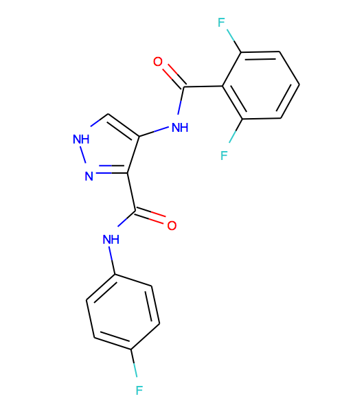

CCP4i2 Tutorial: Inhibitor-bound ternary complex of CDK1, Cyclin B1 and CKS2
A ternary complex of CDK1 bound to Cyclin B1 and CKS2, bound to a pyrazole inhibitor
Data files
- 1hck.pdb Chain A is monomeric CDK2, i.e. inactive conformation
- 1jst.pdb Chain A is CDK2 in complex with Cyclin A, i.e. in active conformation
- 1buh.pdb CKS1 in complex with CDK2
- 2b9r.pdb Chains are all human cyclin B1
- CDK1CyclinBCKS2Compound23.mtz
- P06493.fasta Sequence of human CDK2: crystallised species had an N-terminal GPLGS proteolysis artefact
- P14635.fasta Sequence of human Cyclin B1: crystallised species was untagged residues 175-432
- P33552.fasta Sequence of human CKS2: crystallised species added a C-terminal hexahistidine tag
The ligand for this structure looks as follows:

Last modified: Thu Feb 26 14:37:05 GMT 2015